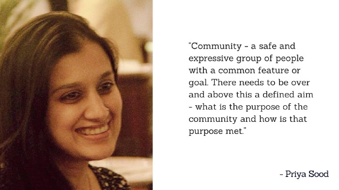

18 Experts definition of “Community” that will make you understand this concept easily!!

What do you understand by the word “Community”?
Aren’t there already a lot of definitions for community and haven’t we read most of them till now? Everyone has defined the word “Community” in his/her own way but in the end, the generic meaning of a community is- to unite people for a common cause.
1. Asha Chaudhry, Community Adviser BabyChakra
2. Arbab Usmani, Co-founder & Community builder @Uppskill
3. Deepak Sahoo, Community and Partnership Hasura
4. Teja Bitra, People Operations @CrowdShakti
5. Abhishek Kumar Gupta, Community Head @ Startup Delhi
6. Rajesh Mummaneni, community enthusiast Saakshar Organisation
7. Priya Sood, User & Community Engagement Head BabyChakra

8. Yashraj Nayak, India Community Manager @Progate
9. Utkarsh Singh Bhardwaj, Community Head- Bangalore @Pushstart
10. Mohammed Rafy, Community Manager @ communitymanagerjobs.co
<
11. Mahesh Chikane, Founder @ The Test Tribe community
12. Milan Singh Thakur, Founder @ AIML Global
13. Hamza Bhamla, Community Enthusiast
14. Mulchand K Dedhia, CEO & Founder @ Photo Konnect
15. Ritesh Aggarwal, Founding Partner at BabaPinnak
16. Mohit Mahajan, Foodie and Community Head @ Foodwarz
17. Prashanth Reddy, Founder @ Developer Weekend
18. Abhinaya Bharadhwaj, Founder at Xplore Abhinayam

Hereby, we would like to thank all the community enthusiasts for sharing their definitions with us. We hope that these definitions gave a clarity to you and made you understand this concept, better. Also, if you can frame your own definition of community now, do reply it in the comment section below! We will be publishing the best ones here :)

About The Author
Writter